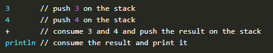
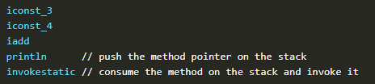
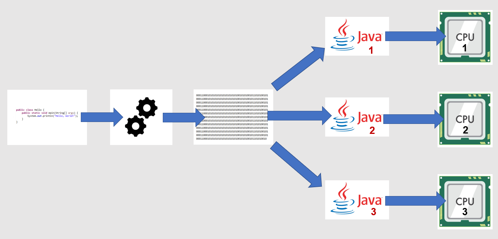
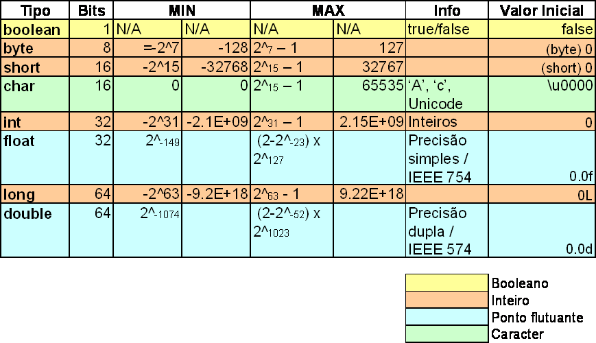
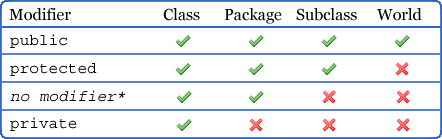

JAVA
Orientação a Objetos
História do Java
Iniciado em Junho de 1991 por James Gosling, Mike Sheridan e Patrick Naughton o projeto da linguagem Java foi desenvolvido, inicialmente, para a televisão interativa, e lançado em 1995 como um componente central da plataforma Java da Sun Microsystems.
Completa em português:
Sobre a linguagem
Java é uma linguagem de programação orientada a objeto e projetada para permitir aos desenvolvedores programar uma vez e ter seu programa executado em diversos dispositivos (o famoso "Write once, run anywhere").
Como assim?
O código Java é compilado para bytecode que, por sua vez, é interpretado pela JVM. Quem deve se preocupar com a plataforma onde o código será executado, são os desenvolvedores da máquina virtual.
 Compilado?
Compilado é o nome que se dá ao código processado por um Compilador, que é um programa que "traduz" o código de uma linguagem de programação para linguagem de máquina ou para uma a ser interpretada.
JVM?
A JVM é (Java Virtual Machine) é um programa que sabe interpretar e executar um programa Java (já em bytecode)
Fluxo do compilador
Compilador

Fluxo da JVM
JVM
Anatomia JDK 8
Operadores
- Aritmético (+, -, *, /, %)
- Atribuição (=, +=, -=, *=, /=, %=)
- Relacional (==, !=, <, <=, >, >=)
- Lógico (&&, ||)
- Negação (!)
- Decremento/Incremento(--, ++)
Estruturas lógicas
Sequencia
É uma estrutura na qual todos os comandos são executados em ordem, sem desvios
Seleção/Decisão
if (condicaoVerdadeira) {
...
} else if {
...
} else {
...
}
Laço/Repetição (Looping)
while (condicaoVerdadeira) {
...
}
for (int i = 0; i < 10; i++) {
...
}
Tipos do Java
Classes
Uma classe é uma estrutura de dados* expansível que serve como modelo para que objetos de seu tipo possam ser criados a partir dela, descrevendo um estado (atributos) e comportamento (métodos) deles.
*Descreve meios de organização e acesso a um grupo de informações relacionados entre si.
public class Pessoa {
}
Componentes das classes
Atributos
Também conhecidos como propriedades ou campos e variáveis de instância, eles armazenam o estado da classe.
public class Pessoa {
private String nome;
}
Métodos
É uma coleção de comandos agrupados para realizar uma operação. A sentença declarativa dele é chamada de assinatura. Um método pode manter o mesmo nome, mas não pode repetir: tipo do retorno, nome e parâmetros. Algo nessa lista anterior precisa diferir. A este processo chamamos de Sobrecarga.
public class Pessoa {
private void existir() {
}
}
Objetos
Objetos são criados a partir das classes e, normalmente, servem para modelar objetos do mundo real. O processo de criar um novo objeto é chamado de instânciar. Eles é que realizam o programa, tanto que um programa Java é, basicamente, objetos se comunicando.
Pessoa pessoa = new Pessoa();
Boas práticas e padrões Java
Classes
- Nome descritivo, substantivo e letra maiúscula
Variáveis
- Nomes de variáveis descritivos e camelCase (ex.: minhaVariavelLegal);
- Nome deve começar com letras minúsculas, $ ou _;
- Nome deve ser um substantivo, exceto em caso de booleanos, que geralmente são escritos em forma de pergunta (ex.: ehValido, temDependencia)
Métodos
- Nomes de Método descritivos e no infinitivo
Exceções e o bloco try/catch/finally
Às vezes as coisas não ocorrem exatamente como o esperado...
Fluxos de exceção podem acontecer por diversas causas, como tentar chamar um método em uma referência nula ou tentar converter uma frase com apenas letras em número. Para esses casos, usamos o bloco try/catch(e às vezes, finally), para capturarmos essas exceções e tratarmos de alguma forma.
try {
// codigo perigoso
} catch (Exception e) {
// codigo salvador
//... ou nao
} finally {
// independente do que acontecer, o codigo aqui dentro sempre vai ser executado
}
Não modificadores de acesso (non-access modifiers)
- static: torna um membro da classe imediatamente disponível para utilização
- final: seu comportamento difere para classe, variável e método (explicação)
- abstract: seu comportamento difere para classe e método (explicação)
- synchronized: faz com que aquele método ou atributo respeite concorrência de acesso
- transient: torna o campo/atributo não serializável
- volatile: garante a visibilidade do campo/atributo por todas as Threads
- strictfp: restringe o limite de ponto flutuante
Outras palavras importantes
- this: refere-se a um membro da classe
- super: refere-se a um membro da classe pai/mãe
- return: encerra um método, retornando um valor do tipo declarado no método (se houver)
- package: mostra em qual pacote está localizada sua classe
- import: mostra de onde vem a classe que você está usando
- instanceof: verfica se uma referência aponta para a instância de um determinado tipo/objeto/classe
Conceitos de Orientação a Objeto
Encapsulamento
É uma forma de definir o escopo de visão que os outros objetos terão de um outro. A ideia por trás desse tipo de conceito é diminuir os bugs como alteração de valores indevidamente.
Modificadores de acesso no Java
- Métodos declarados public na superclasse devem ser públicos também nas subclasses
- Métodos declarados protected na superclasse devem continuar assim ou virarem public também nas subclasses
Getters e Setters
Uma das formas de oferecer acesso aos membros de uma classe com um certo controle, é através de métodos get e set da forma abaixo:
public String getNome() {
return this.nome;
}
public String setNome(String nome) {
this.nome = nome;
}
Herança
Através da palavra-chave extends, é possível fazer com que a classe declarada tenha acesso aos atributos e métodos da classe pai/mãe (contanto que não sejam privados e default em alguns casos!); Isso faz com que os programadores escrevam menos e impede que objetos tenham comportamentos diferentes quando não desejado.
public class Professor extends Pessoa {
...
}
Sobrescrita
Quando um método precisa ser especializado, podemos sobrescrever o método herdado da classe pai/mãe
public class Professor extends Pessoa {
@Override
public void respirar() {
}
}
Agregação
Agregação representa uma forma unidirecional de associação entre dois objetos. Para saber se ela existe em um objeto, é preciso que ele passe no teste TEM-UM(A).
Considerando que o Professor tenha onde morar, etc:
public class Professor {
private Endereco endereco;
private Vida vida;
}
Vemos que a classe Professor TEM-UM(A) referência para a classe Endereco e para a classe Vida.
Composição
É uma forma especializada de agregação, onde caso o objeto pai/mãe deixa de existir, a classe filho/filha perde o sentido de existir.
Considerando que não estejamos modelando um filme de terror:
public class CorpoHumano {
private Mao mao;
private Perna perna;
}
Vemos que se o objeto representando CorpoHumano deixa de existir, não faz sentido essas partes continuarem a existir.
public class Evento {
private Cidade cidade;
}
Se o objeto evento acaba, não necessariamente o endereço precisa deixar de existir.
Polimorfismo
É a propriedade um objeto possuir várias formas. Se um objeto herda de um outro, então podemos usar como tipo de variável a classe pai/mãe ao invés dela própria. Isso deixa o nosso código mais genérico e, possivelmente, mais enxuto porque não precisamos implementar métodos com parâmetros diferentes para alguns objetos. Qualquer objeto que passe em mais de um teste É-UM(A) é considerado polimórfico.
Consideremos que a classe Professor herde de Pessoa:
Pessoa professor = new Professor();
Dessa forma, se alguma parte do código só precisa executar os métodos de uma superclasse, é razoável que coloquemos ela como tipo para o parâmetro de métodos e criação de referência para um objeto.
Arrays
Arrays (Vetores) em Java são estruturas de dados que comportam diversos valores (diferentes ou não) com o mesmo tipo de dado.
// Declarando
int vetor[];
int[] vetor;
// Inicializando
int vetor[] = new int[5];
int[] vetor = {1,2,3,4,5};
//...em caso de Objetos
String vetor[];
String[] vetor;
// Inicializando
String vetor[] = new String[5];
String[] vetor = new String[] {""};
String[] vetor = {""};
final
- classe: ela NÃO pode ser herdada
- variável
- primitiva: o valor não pode mudar
- objeto: torna uma referência inalienável, porém, com conteúdo mutável
- método: ele não pode ser sobrescrito nem escondido (quando a classe filha declara um método static com a mesma assinatura da mãe)
public class ClasseMae
{
public void metodoSemFinal() {...}
public final void metodoComFinal() {...}
public static void metodoEstaticoSemFinal() {...}
public static final void metodoEstaticoComFinal() {...}
}
public class ClasseFilha extends ClasseMae
{
public void metodoSemFinal() {...} // OK
// tentativa de sobrescrever
public void metodoComFinal() {...} // proibido
public static void metodoEstaticoSemFinal() {...} // OK
// tentativa de esconder
public static void metodoEstaticoComFinal() {...} // proibido
}
Voltar
abstract
- classe: ela DEVE ser herdada. Pode ou não conter métodos abstratos
public abstract class ClasseAbstrata() {
...
}
public class Pessoa
{
// Método comum
public void correr() {
// Implementação
}
// Método abstrato
public abstract void dormir();
}
Voltar
/